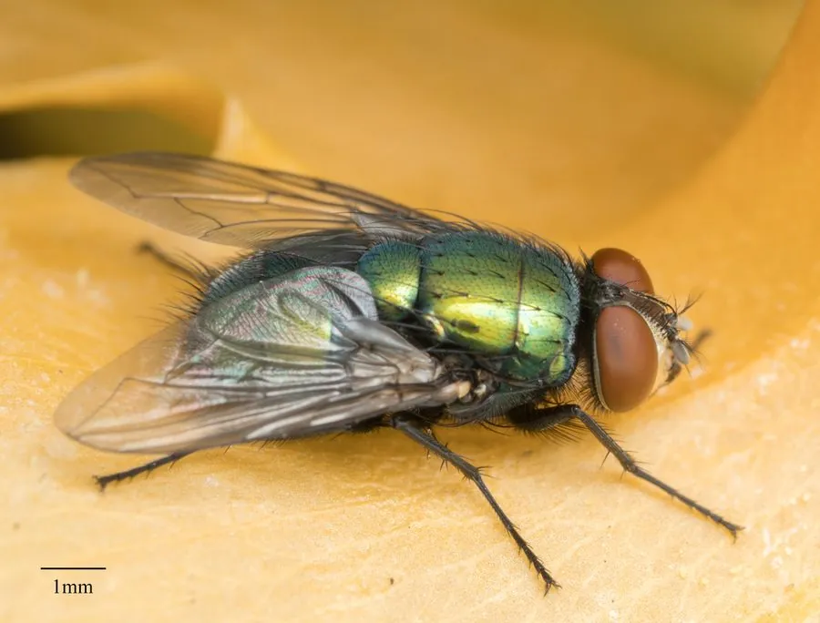

昆虫 · 动物界
绿头苍蝇 Lucilia sericata

体呈金属蓝绿色的常见苍蝇，多出现在腐肉和垃圾周围，是重要的法医昆虫，也是“蝇蛆疗法”的主角。
- 分类
- 门节肢动物门纲昆虫纲目双翅目科丽蝇科属绿蝇属
- 栖息环境
- 腐肉、动物尸体、垃圾堆和粪便周围，也常飞入人类居住区
- 地理分布
- 全球广泛分布，包括中国各地
- 保护级别
- 暂无评估
物种志
绿头苍蝇成虫体长 5–10 mm，体呈金属蓝绿或青铜绿色，胸部背板上有刚毛，复眼大而呈红褐色。翅透明，足黑色。它的金属光泽来自体壁和翅上的纳米结构对光线的干涉，而不是单纯的色素。
绿头苍蝇分布全球，成虫喜欢在腐肉、动物尸体、垃圾和粪便上觅食产卵，幼虫（蛆）以腐肉为食。它是法医昆虫学中推断死亡时间的重要物种：蛆的长度和发育阶段可以推算尸体暴露的时间。在严格消毒的条件下，它的无菌幼虫被用于“蝇蛆疗法”，清理难治性伤口中的坏死组织。同时，绿头苍蝇也会传播肠道病原体，是卫生防疫中的重点防制对象。目前它没有IUCN 的正式评估，中国未将其列入国家重点保护野生动物名录。
形态与习性
- 食性成虫取食腐肉、甜味液体，幼虫以腐肉为食
- 体长5–10 mm
- 繁殖一次可产卵数百粒，卵在腐肉中孵化
- 寿命约 2–4 周
- 法医用途蛆的长度和发育阶段可推断死亡时间
- 卫生危害可传播肠道病原体，是防疫重点对象
趣味知识
- 绿蝇的幼虫俗称蛆，是法医推断死亡时间的重要“活时钟”。
- 在严格消毒条件下，活蛆被用于清理难治性伤口的坏死组织。
- 它体表的金属光泽来自体壁纳米结构对光线的干涉。